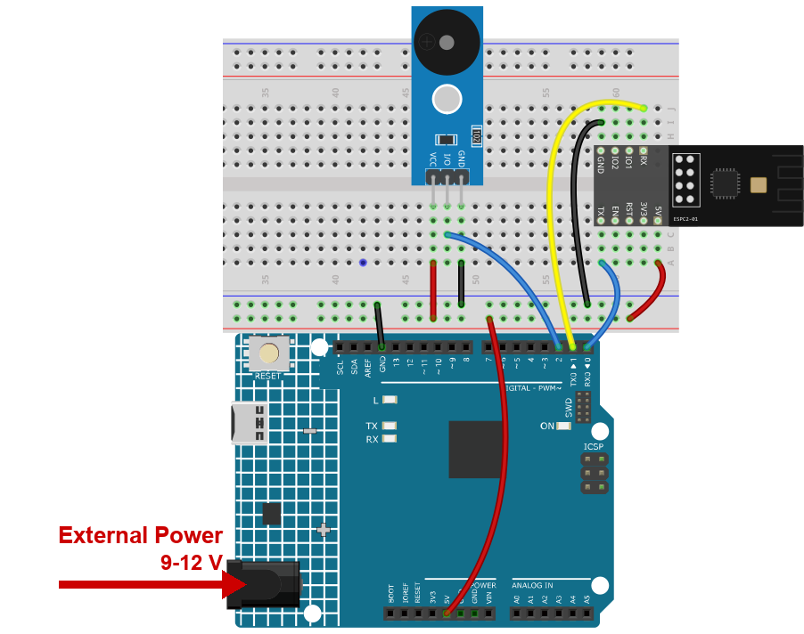
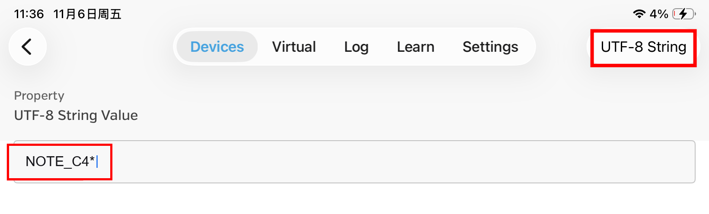

Note
Hello, welcome to the SunFounder Raspberry Pi & Arduino & ESP32 Enthusiasts Community on Facebook! Dive deeper into Raspberry Pi, Arduino, and ESP32 with fellow enthusiasts.
Why Join?
Expert Support: Solve real-life coding problems and technical challenges with our community and team.
Learn & Share: Exchange tips, tutorials, and projects to enhance your skills.
Exclusive Previews: Get early access to new product announcements and sneak peeks.
Festive Promotions and Giveaways: Take part in giveaways and holiday promotions.
👉 Ready to explore and create with us? Click [here] and join today!
13. Bluetooth Piano
A buzzer becomes a piano. Send NOTE_C4* and it plays a C for a fifth of a second.
The interesting part is the star: it marks the end of a message, so the sketch knows
when a whole note name has arrived and does not try to play NOTE_C before the rest of
the name is there.
1. Build the Circuit
Note
The module draws a high current at start-up, so make sure the 9 V battery or an external power supply is plugged into the DC jack of the R4 Minima.


2. Upload the Code
Open the
13-Bluetooth_piano.inofile under the path ofultimate-sensor-kit\code\iot_project_espc201\bluetooth\13-Bluetooth_piano.Select Arduino UNO R4 Minima and the right port, then click Upload.
Open the Serial Monitor at 115200. You should read:
=== ESPC2-01 Bluetooth (BLE) === [OK] BLE is ready - scan for "SunFounder-C2" on your phone --------------------------------
If you read
[!] no reply from the module, the module is not answering on D0/D1 - check the four wires and the power supply.
3. Play a Note from the Phone
Open LightBlue, tap Scan and connect to SunFounder-C2.
Expand the service 0xA002 and open the characteristic C304. Then tap Write new value button.

Set the format in the top right corner to UTF-8 String and type
NOTE_C4*. The picture shows the field just before sending:
Send it. The buzzer sounds a C for about 0.2 seconds and the Serial Monitor prints
NOTE_C4- the star is used and then removed.These eight notes are available:
Send this
Note
NOTE_C4*,NOTE_D4*,NOTE_E4*low C, D, E
NOTE_F4*,NOTE_G4*,NOTE_A4*,NOTE_B4*F, G, A, B
NOTE_C5*C one octave higher
Note
Do not forget the star. Without it the sketch keeps waiting for the end of the message, nothing is played and the Serial Monitor prints nothing either.

4. Code explanation
The buzzer
tone(buzzerPin, NOTE_C4); delay(200); noTone(buzzerPin);
tone(pin, frequency)starts a square wave at that frequency - a plain piezo buzzer then plays it.NOTE_C4is not a pin number but a frequency defined by the Arduino core.Collecting characters until the star
while (bleSerial.available() > 0) { character = bleSerial.read(); noteType = noteType + character; if (character == '*') { noteType = noteType.substring(0, noteType.length() - 1); ... } }
Characters are collected one by one. The star is both the trigger to act and the thing to remove:
substring(0, length()-1)drops the last character, soNOTE_C4*becomesNOTE_C4.Comparing text
if (noteType == "NOTE_C4") { tone(buzzerPin, NOTE_C4); } else if (noteType == "NOTE_D4") { ... }
Text is compared with the double-quote form and with
==. A single=would assign instead of compare and the code would compile but never work.Reset after every note
noteType = ""; delay(200); noTone(buzzerPin);
Clearing
noteTypeis essential: without it the next note would be appended to the previous one and no comparison would ever match again.